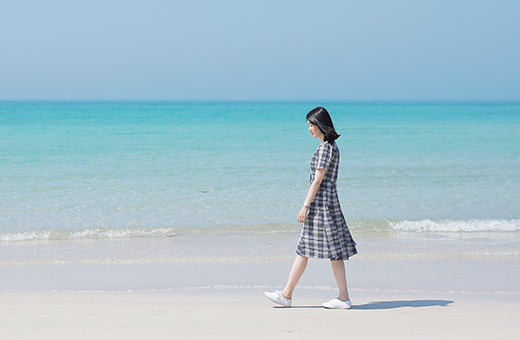

KIM EUN JI
원하는 것을 실현하는 Web Publisher & Frontend Developer
사용자의 경험을 중요하게 고려하여 페이지를 디자인하며, 설계부터 탄탄한 시멘틱 구조와 감각적인 디자인을 추구합니다.
스크롤바를 내리면 작품을 감상할 수 있습니다.
About Me
안녕하세요, 원하는 것을 실현하는 웹퍼플리셔 김은지입니다.
새로운 것을 탐험하는 것을 좋아하는 저는 트렌드가 빠르게 변하고,
새로운 기술이 끊임없이 등장하는 웹디자인 분야를 즐겁게 공부하고 있습니다.
1px 차이로도 완성도가 다르게 느껴지는 것이 UI디자인이라 생각합니다.
작은 디테일의 차이를 아는 UI/UX 디자이너가 되고 싶습니다.
더 나은 UI를 위해 꾸준히 노력하는 저의 모습이 이곳에 담겨있습니다.
- NAME : 김은지
- PROFESSION : 웹퍼블리셔
- PHONE : 010-8764-1226
- EMAIL : enjkm62@gmail.com
Skill
-
Semantic Web
-
- Semantic Web
- Web Design
- UI/UX Design
-
HTML5 & CSS3 시멘틱 페이지를 ZenCoding(EMMET), SCSS로 코딩할 수 있습니다.
플러그인 없이 기본적인 Javascript/jQuery/React 로직구현이 가능합니다.
-
Creative Design
-
- Illustration
- Image Retouch
- Video Editing
-
사용자가 보기 편안하되, 세련된 스타일을 유지하는 것이 제가 추구하는 UI입니다.
페이지 디자인에 필요한 섬세한 이미지 리터칭과 감각적인 UI 디자인을 할 수 있습니다.
Ability
온라인 이력서

사용자의 입장에서 생각하고, UX를 중시하는 UI 디자인을
추구하며 만들어가고 싶습니다.
HTML5 & CSS3 시멘틱 페이지를 ZenCoding(EMMET)으로 코딩할 수 있습니다.
남다른 꼼꼼함으로 놓치기 쉬운 디테일까지 캐치하고 실수가 생기지 않도록
두 번, 세 번 검토하는 편입니다.
JS 플러그인을 사용에 그치지 않고 필요한 기능을 직접 구현할 수 있는 Javascript/jQuery 로직구현이 가능합니다.
새로운 기술과 트렌드를 끊임없이 탐구하고 공부합니다.

Personality
-
01 #꼼꼼함
프로젝트의 완성도는 작은 디테일로 결정된다고 생각합니다.
남다른 꼼꼼함으로 놓치기 쉬운 디테일까지 캐치하고 실수가 생기지 않도록 두번 세번 검토하는 편입니다. -
02 #성실함
성실함은 누구나 가질 수 있는 것 같지만 사실 갖추기 가장 어렵고, 그만큼 큰 장점이라고 생각합니다. 어떤 일이든 성실하게 임하면 그만큼 성장한다고 생각하고 훗날의 저에게 큰 도움이 될 거라는 믿음을 가지고 있습니다.
-
03 #책임감
언제나 맡은 일에 책임감을 가지고 임합니다.
제 손으로 시작한 일은 곧 저의 커리어라고 생각하기 때문에 허투루 작업하지 않고, 마무리까지 최선을 다합니다. -
04 #꾸준함
꾸준하게만 해도 성공한다라는 말이 있습니다.
꾸준하게 하기가 그만큼 힘들다는 뜻이 아닐까 싶습니다.
그래서 저는 이 분야에서 꾸준하게 공부하며 한걸음 한걸음 더 나아가고자 매일 노력하고 있습니다.
Portfolio
코딩 프로젝트
-
코로나 예방 함께해요!
올바른 코로나 예방 에티켓을 학습할 수 있도록 유도하는 미니게임으로 게임의 컨셉을 정하는 기획부터 마무리 단계까지 자체적으로 디자인·개발한 프로젝트입니다. 팀 프로젝트
-
제주여기
제주도 여행에 필요한 정보들을 소개하는 사이트입니다. 자료조사부터 코딩까지 직접 진행했습니다. 관광지, 맛집, 즐길거리, 축제로 카테고리를 나누어 소개하고 있습니다. 개인 작업
사이트 보기 -
프로필 사이트
프로필 사이트의 제작 과정을 담은 자료를 보실 수 있습니다. 저의 역량과 지금까지 작업한 포트폴리오를 잘 전달할 수 있도록 노력해서 만든 사이트입니다. 개인 작업
작업과정 보기
디자인 포트폴리오

Contact
귀사에 입사를 지원합니다.
저의 웹퍼블리싱 이야기 입니다.
질문을 선택하시면 정리된 답변을 보실수 있습니다.
- 1. 시멘틱웹이 중요한 이유는 무엇인가요? 화살표
-
훌륭한 컨텐츠를 가지고 있다고 해도 그 컨텐츠가 사용자에게 닿지 않으면 의미가 없어집니다.
웹페이지를 필요로 하는 사용자에게 도달할 수 있도록 도와주는 것이 시멘틱웹입니다.
정보의 의미를 담아서 구성된 시멘틱 웹페이지는 사용자와 웹의 상호작용을 도와주게 됩니다. - 2. 자바스크립트 라이브러리 사용시 가장 큰 장점은? 화살표
-
기존 자바스크립트만 사용했을 때 다소 복잡하게 느껴지는 코드를 간결하게 작성할 수 있다는 점입니다.
코드를 작성하는 입장에서는 훨씬 직관적인 명령어 사용으로 인해 작업의 효율성도 올라갑니다. - 3. CSS 미디어쿼리는 어떤 역할을 수행하나요? 화살표
-
반응형 웹페이지 구현을 위한 역할을 합니다.
사용자의 환경에 따라서 최적화된 화면을 보여주기 위하여 미디어쿼리를 작성합니다. - 5. UI 디자인 시 가장 중요하게 생각하는 것이 무엇인가요? 화살표
-
'조화로움'입니다. 독특하고 창의적인 디자인도 물론 필요한 부분이지만
가독성이 중요한 UI 디자인에서는 모든 요소들이 조화롭게 어울리는지가 중요하다고 생각합니다.
전체적인 디자인의 통일성을 생각하여 구현하려고 노력하고 있습니다. - 4. 웹퍼블리셔가 갖춰야 할 마인드는 무엇일까요? 화살표
-
끈기있게 도전하는 자세라고 생각합니다.
끈질기게 노력하여 쌓은 하나하나의 경험이 저의 실력이 된다고 생각합니다.
때로는 잘 풀리지 않더라도 포기하지 않고 앞으로 나아가면 더 나은 모습이 되어있을 거라 믿습니다.
더 궁금하신 점은 면접 시 말씀드리겠습니다. 감사합니다.
본 페이지는 저의 개인 포트폴리오용으로 제작되었으며, 상업적인 목적과 관련이 없음을 알려드립니다.